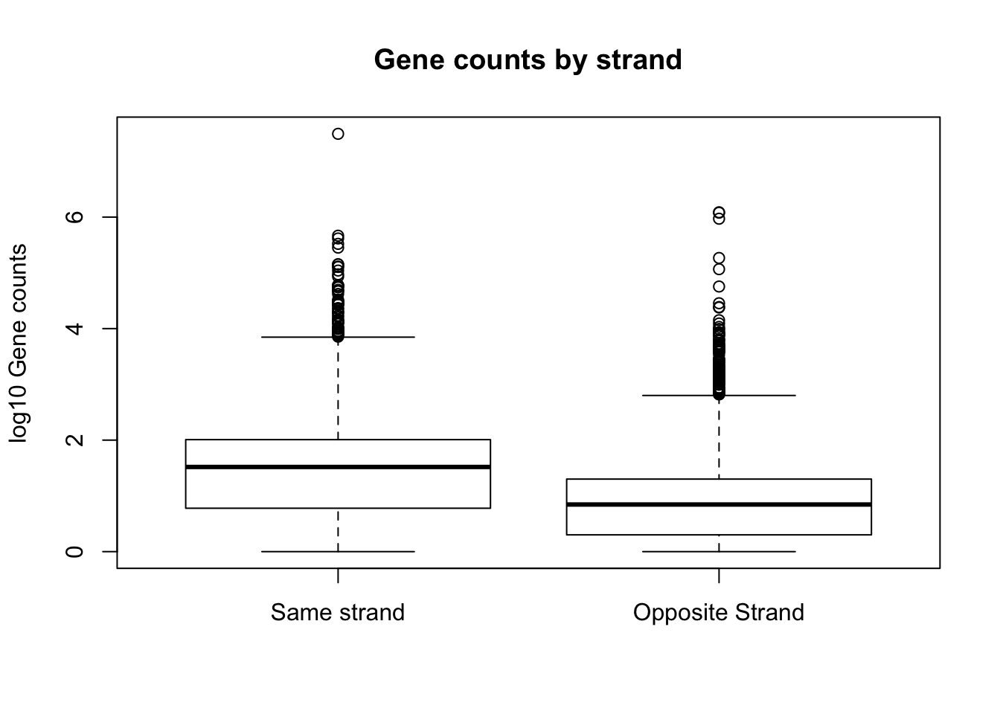
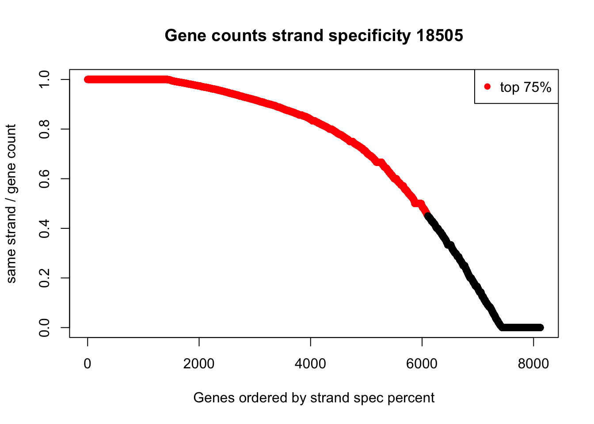
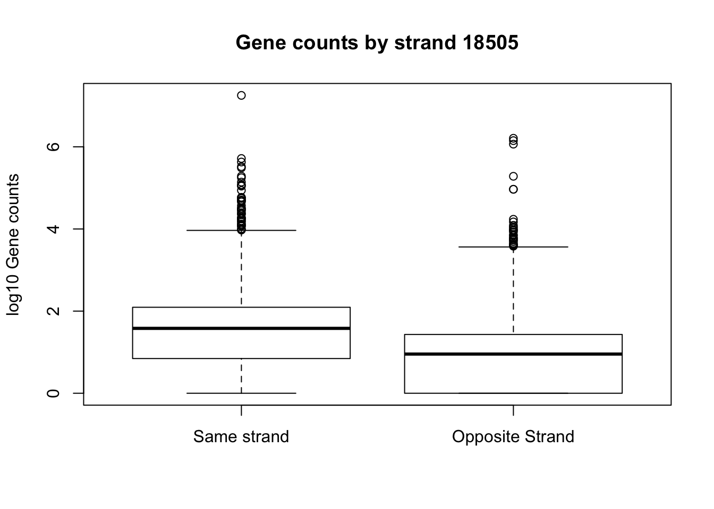
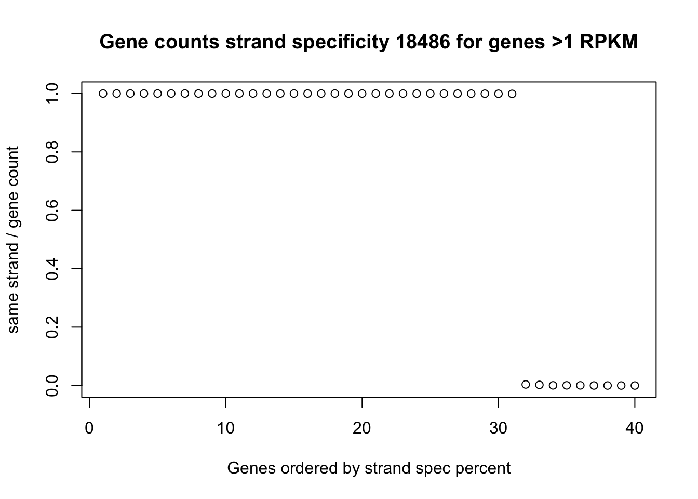

Last updated: 2018-03-26
Code version: 8e2043e
The purpose of this analysis is to explore the strand specificity of my net seq data. Within genes we expect strand specific expression and at TSS we would expect some convergent transcription. I will filter the overlaping genes as done in the Meyer paper.
Mayer filtering: Pol-II-transcribed genes that do not overlap other genes within 2.5 kb of the TSS and polyadenylation site and are longer than 2 kb
bedtools closest -N
Get the protein coding genes:
grep 'protein_coding' gencode.v19.annotation.bed | awk '$8 == "gene"' |cut -f1-6 |sed 's/^chr//' > gencode.v19.annotation.proteincodinggene.bed Only keep genes that are 2kb. I want genes where end (3) - start (2) is greater than 2000
awk '{if( ($3 - $2) > 2000) print($1 "\t" $2 "\t" $3 "\t" $4 "\t" $5 "\t" $6)}' gencode.v19.annotation.proteincodinggene.bed > gencode.v19.annotation.proteincodinggene.2kb.bedNext step is to look for overlab distance with bedtools closest -N.
gene_dist.sh
#!/bin/bash
#SBATCH --job-name=gene_dist
#SBATCH --time=8:00:00
#SBATCH --output=gene_dist.out
#SBATCH --error=gene_dist.err
#SBATCH --partition=gilad
#SBATCH --mem=10G
#SBATCH --mail-type=END
module load Anaconda3
source activate net-seq
bedtools closest -N -d -a /project2/gilad/briana/genome_anotation_data/gencode.v19.annotation.proteincodinggene.2kb.bed -b /project2/gilad/briana/genome_anotation_data/gencode.v19.annotation.proteincodinggene.2kb.bed > /project2/gilad/briana/genome_anotation_data/gencode.v19.annotation.proteincodinggene.2kb.dist.bedColumn 13 of this file must be > 2500
awk '{if( $13 > 2500) print($1 "\t" $2 "\t" $3 "\t" $4 "\t" $5 "\t" $6)}' gencode.v19.annotation.proteincodinggene.2kb.dist.bed > gencode.v19.annotation.distfilteredgenes.bedThis leaves 9367 genes.
Do this for 18486 first.
Sort both files with sort -k1,1 -k2,2n
#!/bin/bash
#SBATCH --job-name=strand
#SBATCH --time=8:00:00
#SBATCH --output=strand.out
#SBATCH --error=strnad.err
#SBATCH --partition=broadwl
#SBATCH --mem=40G
#SBATCH --mail-type=END
bedtools coverage -counts -s -sorted -a /project2/gilad/briana/genome_anotation_data/gencode.v19.annotation.distfilteredgenes.sort.bed -b /project2/gilad/briana/Net-seq-pilot/data/bed/YG-SP-NET3-18486_combined_Netpilot-bedsort.bed > /project2/gilad/briana/Net-seq-pilot/output/strand_spec/same_strand_genecounts_18486.txt
bedtools coverage -counts -S -sorted -a /project2/gilad/briana/genome_anotation_data/gencode.v19.annotation.distfilteredgenes.sort.bed -b /project2/gilad/briana/Net-seq-pilot/data/bed/YG-SP-NET3-18486_combined_Netpilot-bedsort.bed > /project2/gilad/briana/Net-seq-pilot/output/strand_spec/opp_strand_genecounts_18486.txt Library input:
library(dplyr)
Attaching package: 'dplyr'The following objects are masked from 'package:stats':
filter, lagThe following objects are masked from 'package:base':
intersect, setdiff, setequal, unionlibrary(workflowr)Loading required package: rmarkdownThis is workflowr version 0.7.0
Run ?workflowr for help getting startedlibrary(ggplot2)Input data:
opp_strand=read.table("../data/same_strand_genecounts_18486.txt", header=FALSE, stringsAsFactors = FALSE)
colnames(opp_strand)= c("chr", "start", "end", "gene","score", "strand", "opp_count")
same_strand=read.table("../data/opp_strand_genecounts_18486.txt", header=FALSE, stringsAsFactors = FALSE)
colnames(same_strand)= c("chr", "start", "end", "gene","score", "strand", "same_count")Merge on the gene names:
full_strand=inner_join(same_strand,opp_strand, by=c(c("chr", "start", "end", "gene","score", "strand")))
full_strand= full_strand %>% mutate(perc_same=(same_count /(same_count + opp_count))) %>% filter(perc_same != "NaN")summary(full_strand$perc_same) Min. 1st Qu. Median Mean 3rd Qu. Max.
0.0000 0.5000 0.8333 0.6927 0.9611 1.0000 plot(sort(full_strand$perc_same, decreasing=TRUE), col=ifelse((sort(full_strand$perc_same, decreasing=TRUE)) >.5, "red", "black"), ylab="same strand / gene count", xlab="Genes ordered by strand spec percent", main="Gene counts strand specificity 18486")
legend("topright", legend = c("top 75%"), col=c("red"), pch=16, cex=1)boxplot(log10(full_strand$same_count), log10(full_strand$opp_count), names=c("Same strand", "Opposite Strand"), ylab="log10 Gene counts", main="Gene counts by strand")Warning in bplt(at[i], wid = width[i], stats = z$stats[, i], out = z$out[z
$group == : Outlier (-Inf) in boxplot 1 is not drawnWarning in bplt(at[i], wid = width[i], stats = z$stats[, i], out = z$out[z
$group == : Outlier (-Inf) in boxplot 2 is not drawn
I am going to run the gene counts analysis not strand specific to make sure I am getting a sum of the these counts.
#!/bin/bash
#SBATCH --job-name=all_counts
#SBATCH --time=8:00:00
#SBATCH --output=all_strand.out
#SBATCH --error=all_strnad.err
#SBATCH --partition=broadwl
#SBATCH --mem=40G
#SBATCH --mail-type=END
bedtools coverage -counts -sorted -a /project2/gilad/briana/genome_anotation_data/gencode.v19.annotation.distfilteredgenes.sort.bed -b /project2/gilad/briana/Net-seq-pilot/data/bed/YG-SP-NET3-18486_combined_Netpilot-bedsort.bed > /project2/gilad/briana/Net-seq-pilot/output/strand_spec/all_strand_genecounts_18486.txt
This file confirmed that the counts without specificity is the sum of the strand information.
strand_spec_18505.sh
#!/bin/bash
#SBATCH --job-name=strand_18505
#SBATCH --time=8:00:00
#SBATCH --output=strand.out
#SBATCH --error=strnad.err
#SBATCH --partition=broadwl
#SBATCH --mem=40G
#SBATCH --mail-type=END
bedtools coverage -counts -s -sorted -a /project2/gilad/briana/genome_anotation_data/gencode.v19.annotation.distfilteredgenes.sort.bed -b /project2/gilad/briana/Net-seq-pilot/data/bed/YG-SP-NET3-18505_combined_Netpilot-bedsort.bed > /project2/gilad/briana/Net-seq-pilot/output/strand_spec/same_strand_genecounts_18505.txt
bedtools coverage -counts -S -sorted -a /project2/gilad/briana/genome_anotation_data/gencode.v19.annotation.distfilteredgenes.sort.bed -b /project2/gilad/briana/Net-seq-pilot/data/bed/YG-SP-NET3-18505_combined_Netpilot-bedsort.bed > /project2/gilad/briana/Net-seq-pilot/output/strand_spec/opp_strand_genecounts_18505.txt opp_strand_18505=read.table("../data/same_strand_genecounts_18505.txt", header=FALSE, stringsAsFactors = FALSE)
colnames(opp_strand_18505)= c("chr", "start", "end", "gene","score", "strand", "opp_count")
same_strand_18505=read.table("../data/opp_strand_genecounts_18505.txt", header=FALSE, stringsAsFactors = FALSE)
colnames(same_strand_18505)= c("chr", "start", "end", "gene","score", "strand", "same_count")
full_strand_18505=inner_join(same_strand_18505,opp_strand_18505, by=c(c("chr", "start", "end", "gene","score", "strand")))
full_strand_18505= full_strand_18505 %>% mutate(perc_same=(same_count /(same_count + opp_count))) %>% filter(perc_same != "NaN")
summary(full_strand_18505$perc_same) Min. 1st Qu. Median Mean 3rd Qu. Max.
0.0000 0.4545 0.8333 0.6850 0.9722 1.0000 plot(sort(full_strand_18505$perc_same, decreasing = TRUE), col=ifelse((sort(full_strand_18505$perc_same, decreasing = TRUE))>.45, "red", "black"), ylab="same strand / gene count", xlab="Genes ordered by strand spec percent", main="Gene counts strand specificity 18505")
legend("topright", legend = c("top 75%"), col=c("red"), pch=16, cex=1)
boxplot(log10(full_strand_18505$same_count), log10(full_strand_18505$opp_count), names=c("Same strand", "Opposite Strand"), ylab="log10 Gene counts", main="Gene counts by strand 18505")Warning in bplt(at[i], wid = width[i], stats = z$stats[, i], out = z$out[z
$group == : Outlier (-Inf) in boxplot 1 is not drawnWarning in bplt(at[i], wid = width[i], stats = z$stats[, i], out = z$out[z
$group == : Outlier (-Inf) in boxplot 2 is not drawn
gene_counts_18486=read.table("../data/all_strand_genecounts_18486.txt", stringsAsFactors = FALSE, header=FALSE)
colnames(gene_counts_18486)= c("chr", "start", "end", "gene","score", "strand", "count")
mapped_18486_mil= 65189389 / 10^6
gene_counts_18486=gene_counts_18486 %>% mutate(K_length= (end - start)/100) %>% mutate(rpkm= + count/(K_length * mapped_18486_mil)) %>% filter(rpkm>=1)Join this with the strand specific information.
top_genes_strand= inner_join(full_strand, gene_counts_18486, by=c("chr", "start", "end", "gene","score", "strand"))Plot this distribution:
plot(sort(top_genes_strand$perc_same, decreasing = TRUE), ylab="same strand / gene count", xlab="Genes ordered by strand spec percent", main="Gene counts strand specificity 18486 for genes >1 RPKM")
Box plots:
boxplot(log10(top_genes_strand$same_count), log10(top_genes_strand$opp_count), names=c("Same strand", "Opposite Strand"), ylab="log10 Gene counts", main="Gene counts by strand, genes >1 RPKM")Warning in bplt(at[i], wid = width[i], stats = z$stats[, i], out = z$out[z
$group == : Outlier (-Inf) in boxplot 1 is not drawnWarning in bplt(at[i], wid = width[i], stats = z$stats[, i], out = z$out[z
$group == : Outlier (-Inf) in boxplot 2 is not drawnFilter the bams as I did in the create blacklist. filt_smRNA_bam.sh
#!/bin/bash
#SBATCH --job-name=intersect_bam
#SBATCH --time=8:00:00
#SBATCH --output=intbam_sbatch.out
#SBATCH --error=intbam_sbatch.err
#SBATCH --partition=broadwl
#SBATCH --mem=20G
#SBATCH --mail-type=END
module load Anaconda3
source activate net-seq
sample=$1
describer=$(echo ${sample} | sed -e 's/.*\YG-SP-//' | sed -e "s/_combined_Netpilot-sort.bam$//")
bedtools intersect -v -wa -abam $1 -b /project2/gilad/briana/genome_anotation_data/snRNA.gencode.v19.nochr.bed /project2/gilad/briana/genome_anotation_data/snoRNA.gencode.v19.nochr.bed > /project2/gilad/briana/Net-seq-pilot/data/filter_bam/${describer}.rnafilter.bam
run on: /project2/gilad/briana/Net-seq-pilot/data/sort/YG-SP-NET3-18486_combined_Netpilot-sort.bam
Now when I look at the bams in IGV I have removed the snoRNA in TPT1.
This time I will switch the -s and -S so we get the correct same/opp strand information in the txt files.
bamToBed -i NET3-18486.rnafilter.bam > ../bed/YG-SP-NET3-18486_combined_Netpilot-rnafilt.bed
sort -k1,1 -k2,2n YG-SP-NET3-18486_combined_Netpilot-rnafilt.bed > YG-SP-NET3-18486_combined_Netpilot-rnafilt-sort.bedstrand_filt.sh
#!/bin/bash
#SBATCH --job-name=_filtstrand
#SBATCH --time=8:00:00
#SBATCH --output=filtstrand.out
#SBATCH --error=filtstrnad.err
#SBATCH --partition=broadwl
#SBATCH --mem=40G
#SBATCH --mail-type=END
bedtools coverage -counts -S -sorted -a /project2/gilad/briana/genome_anotation_data/gencode.v19.annotation.distfilteredgenes.sort.bed -b /project2/gilad/briana/Net-seq-pilot/data/bed/YG-SP-NET3-18486_combined_Netpilot-rnafilt-sort.bed > /project2/gilad/briana/Net-seq-pilot/output/strand_spec/same_strand_genecounts_filt_18486.txt
bedtools coverage -counts -s -sorted -a /project2/gilad/briana/genome_anotation_data/gencode.v19.annotation.distfilteredgenes.sort.bed -b /project2/gilad/briana/Net-seq-pilot/data/bed/YG-SP-NET3-18486_combined_Netpilot-rnafilt-sort.bed > /project2/gilad/briana/Net-seq-pilot/output/strand_spec/opp_strand_genecounts_filt_18486.txt opp_strand_18486_filt=read.table("../data/opp_strand_genecounts_filt_18486.txt", header=FALSE, stringsAsFactors = FALSE)
colnames(opp_strand_18486_filt)= c("chr", "start", "end", "gene","score", "strand", "opp_count")
same_strand_18486_filt=read.table("../data/same_strand_genecounts_filt_18486.txt", header=FALSE, stringsAsFactors = FALSE)
colnames(same_strand_18486_filt)= c("chr", "start", "end", "gene","score", "strand", "same_count")
full_strand_18486_filt=inner_join(same_strand_18486_filt, opp_strand_18486_filt, by=c(c("chr", "start", "end", "gene","score", "strand")))
full_strand_18486_filt= full_strand_18486_filt %>% mutate(perc_same=(same_count /(same_count + opp_count))) %>% filter(perc_same != "NaN")
summary(full_strand_18486_filt$perc_same) Min. 1st Qu. Median Mean 3rd Qu. Max.
0.0000 0.5000 0.8319 0.6927 0.9594 1.0000 plot(sort(full_strand_18486_filt$perc_same, decreasing = TRUE), col=ifelse((sort(full_strand_18486_filt$perc_same, decreasing = TRUE))>.5, "red", "black"), ylab="same strand / gene count", xlab="Genes ordered by strand spec percent", main="Gene counts strand specificity filtered 18486")
legend("topright", legend = c("top 75%"), col=c("red"), pch=16, cex=1)boxplot(log10(full_strand_18486_filt$same_count), log10(full_strand_18486_filt$opp_count), names=c("Same strand", "Opposite Strand"), ylab="log10 Gene counts", main="Gene counts by strand 18486 filtered")Warning in bplt(at[i], wid = width[i], stats = z$stats[, i], out = z$out[z
$group == : Outlier (-Inf) in boxplot 1 is not drawnWarning in bplt(at[i], wid = width[i], stats = z$stats[, i], out = z$out[z
$group == : Outlier (-Inf) in boxplot 2 is not drawn hist(full_strand_18486_filt$perc_same, xlab="Same strand/full count for gene", main="18486 strand specificity on filtered genes and filtered bams")sessionInfo()R version 3.4.2 (2017-09-28)
Platform: x86_64-apple-darwin15.6.0 (64-bit)
Running under: macOS Sierra 10.12.6
Matrix products: default
BLAS: /Library/Frameworks/R.framework/Versions/3.4/Resources/lib/libRblas.0.dylib
LAPACK: /Library/Frameworks/R.framework/Versions/3.4/Resources/lib/libRlapack.dylib
locale:
[1] en_US.UTF-8/en_US.UTF-8/en_US.UTF-8/C/en_US.UTF-8/en_US.UTF-8
attached base packages:
[1] stats graphics grDevices utils datasets methods base
other attached packages:
[1] bindrcpp_0.2 ggplot2_2.2.1 workflowr_0.7.0 rmarkdown_1.8.5
[5] dplyr_0.7.4
loaded via a namespace (and not attached):
[1] Rcpp_0.12.15 knitr_1.18 bindr_0.1 magrittr_1.5
[5] munsell_0.4.3 colorspace_1.3-2 R6_2.2.2 rlang_0.1.6
[9] plyr_1.8.4 stringr_1.2.0 tools_3.4.2 grid_3.4.2
[13] gtable_0.2.0 git2r_0.21.0 htmltools_0.3.6 lazyeval_0.2.1
[17] yaml_2.1.16 rprojroot_1.3-2 digest_0.6.14 assertthat_0.2.0
[21] tibble_1.4.2 glue_1.2.0 evaluate_0.10.1 stringi_1.1.6
[25] compiler_3.4.2 pillar_1.1.0 scales_0.5.0 backports_1.1.2
[29] pkgconfig_2.0.1 This R Markdown site was created with workflowr